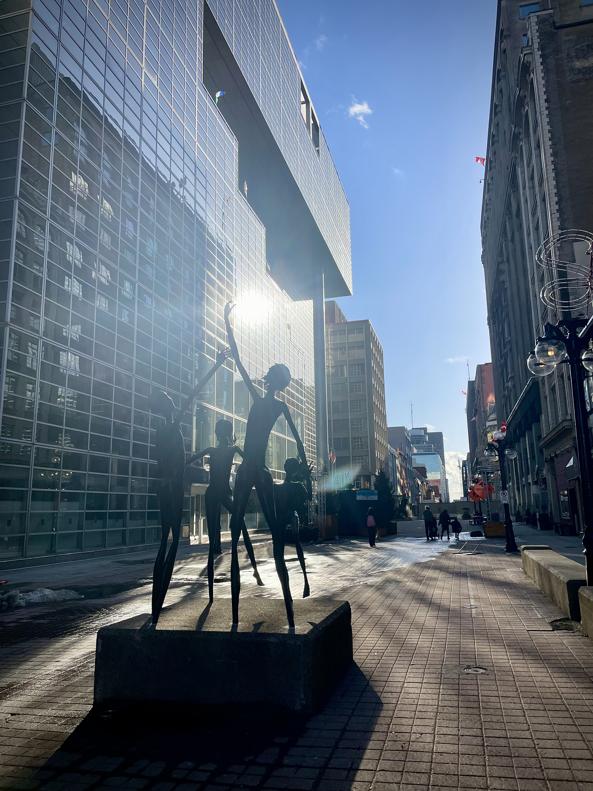

Cradled Beneath Our Feet
An audio documentary exploring the forgotten history of Ottawa's Barrack Hill Cemetery, examining urban expansion, historical erasure, and the ethics of preserving burial sites.

Exploring history and storytelling through sound.
An audio documentary exploring the forgotten history of Ottawa's Barrack Hill Cemetery, examining urban expansion, historical erasure, and the ethics of preserving burial sites.
